Jomfrufisken
- Farve: Sort og hvid stribet
- Levested: Lavvandede koralrev i Det Indiske Ocean og Stillehavet
- Størrelse: Op til 8–10 cm
- Vægt: 10–20 gram
- Hastighed: 2–3 kilometer i timen
- Fun fact: Jeg er i familie med klovnefisken




